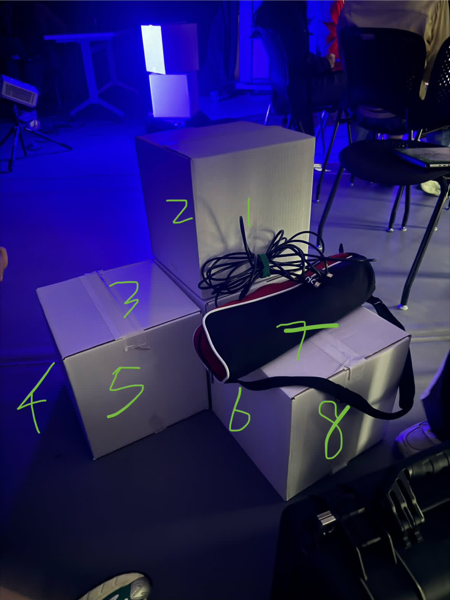
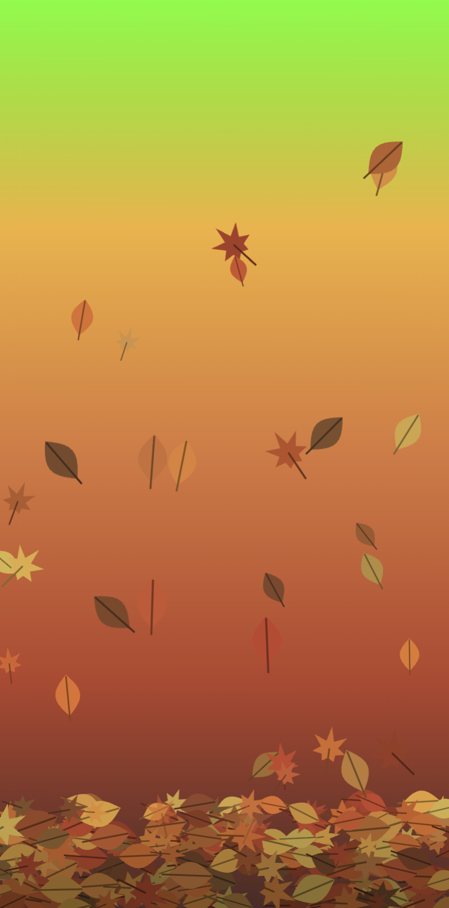
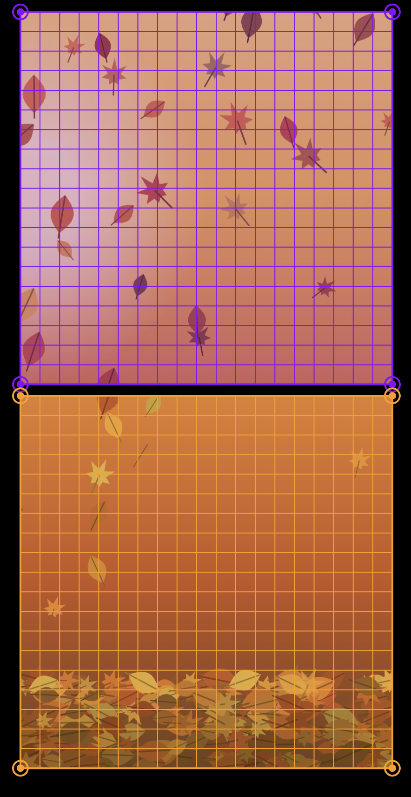

Group projection mapping project with Skyla, Sherin, and Yuxian.
Our group projected the four seasons onto a stack of white boxes. There are eight surfaces, so we deside each person coding one season on two surfaces: spring on 3-4, summer on 1-2, fall on 7-8, and winter on 5-6. We shared one colors.json file so every season uses the same main colors, and each season's edges blend into its neighbors' colors. We chose a particle as an object that represents each season. And we finally decided to make the particles in all four seasons move in one circular direction, so the whole piece reads as a wheel of seasons turning.
I made fall season, on surface 7 (the top of the box) and surface 8 (the side).

createLinearGradient(), createRadialGradient(), addColorStop() class, arrays, beginShape() / vertex(), sin() / cos() lerpColor(), map() lerp() with an quadratic function ( fallenFraction * fallenFraction ) so leaves get swept out faster near the bottom splice() to remove leaves that fade or leave the screen createGraphics(), image(), createQuadMap(), displayTexture() 
I set up my canvas using our shared colors file and drew the background gradient. Then I made a leaf class and got oval leaves falling with a sway, using a fixed center line for each leaf and sin() to swing around it, creating a sway effect.
I made the canvas vertical and added the leaf pile at the bottom. Originally I was going to pile the leave with a for loop, a more complicated way, but then I realized I can just make them randomly generate within a fixed rectangular area. I also added the fading of the fallen leaves, and the maple leaves. The maple leaf is drawn as a star shape with tips and notches. I made the tips smaller near the stem in order to make it look more real. After our group decided on the circular motion of our elements, I added wind effect that make most leaves fallen out of the left edge into winter, and a winter glow on that edge so the two seasons blend.
After our first meeting, I fixed the draft to adapt to the circle of season idea (added the wind blow), and adopted the new summer and winter color.

To map my animation onto two surfaces, I moved everything from setup() and draw() into new function called initFall() and renderFall(pg) only for mapping purpose. so it draws into a 400 * 800 buffer instead of the screen. I also kept the original version of my sketch as a back up. I used a separate mapping file cuts that buffer in half, so that later while projecting, the top half goes on surface 7 and the bottom half on surface 8. That way it's easier than adding extra shaping points on the whole canvas to fit it into two surface perpendicualr to each other. Both halves come from the same image, so a leaf leaving the bottom of surface 7 appears at the top of surface 8, so the animation stays continuous.